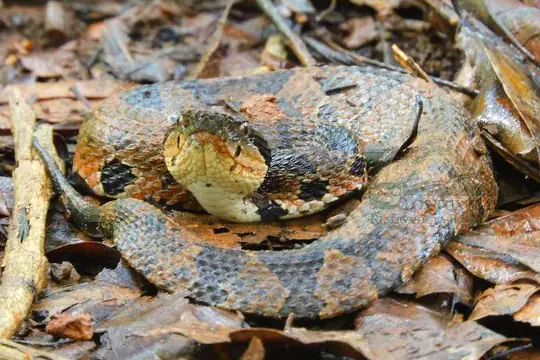
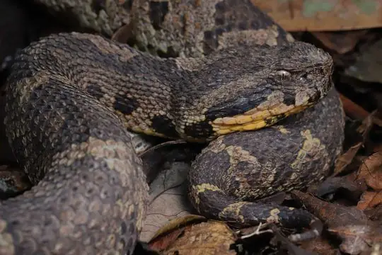

Metlapilcoatlus
The genus Metlapilcoatlus (family Viperidae) has 5 species in SnakeList (all venomous), recorded in 8 countries.
- 5species
- 5venomous
- 8countries
About the genus
A genus of the family Viperidae (vipers and pit vipers).
Species
Showing 5 species
 Central American Jumping Pit ViperMetlapilcoatlus mexicanus
Central American Jumping Pit ViperMetlapilcoatlus mexicanus Honduras Jumping Pit ViperMetlapilcoatlus indomitus
Honduras Jumping Pit ViperMetlapilcoatlus indomitus
Olmecan Pit ViperMetlapilcoatlus olmec
Western Jumping PitviperMetlapilcoatlus occiduus Metlapilcoatlus borealis
Metlapilcoatlus borealis
No snakes in Metlapilcoatlus match.
About the genus Metlapilcoatlus
- Family: Viperidae.
- Recorded in: Belize, Costa Rica, El Salvador, Guatemala, Honduras, Mexico, Nicaragua, Panama.